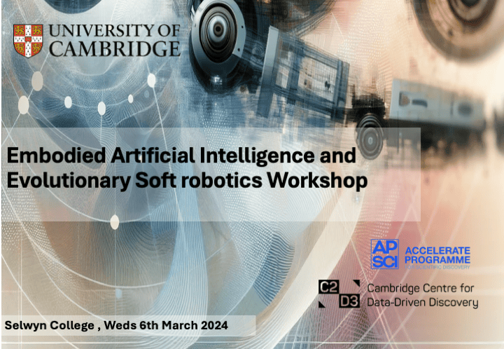
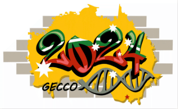

Embodied Artificial Intelligence and Evolutionary Soft Robotics Workshop, 6 March 2024 (Invitation only)
研究記録・アーカイブの詳細は英語原文で掲載しています。
Archived project or event page. Dates and roles describe the original activity.

Embodied Artificial Intelligence (EAI) marks a groundbreaking confluence of AI, robotics, and bioengineering, rooted in the transformative idea that true intelligence transcends mere information processing to encompass physical and social interactions. This vibrant field is committed to developing tangible robots and artifacts that embody this concept, illustrating the remarkable integration of cognitive processes and mechanical operation.
Within this expansive domain, Evolutionary Soft Robotics emerges as a pioneering intersection of evolutionary algorithms with the mechanical sophistication of robotics. This niche focuses on the harmonious integration of sensing, mechanics, and control within soft structures, illuminating the complex interplay between embodied intelligence and artificial constructs. Here, the mechanical ingenuity of soft robotics converges with the analytical prowess of AI, challenging the conventional limits of robot design and functionality.
Our workshop offers an invitation to explore the intersection of Embodied AI and Evolutionary Soft Robotics. It’s a call to examine how the principles of evolutionary robotics not only resonate with but also significantly amplify the capabilities within the realm of Embodied AI. This is an opportunity to follow a journey that transforms visionary concepts into concrete realities, effectively closing the gap between our imaginative potential and our technological achievements in artificial intelligence.
Join us in this pioneering venture, where the amalgamation of mind and machine heralds new avenues for discovery and innovation. Welcome to a workshop designed not just to envision the future of robotics and AI but to actively participate in its creation.
Invited Speakers
- Antoine Cully, Imperial College London
- David Howard, CSIRO
- Emma Hart, Edinburgh Napier University
- Gusz Eiben, Vrije University Amsterdam
- Helmut Hauser, University of Bristol
- Josh Bongard, The University of Vermont
- Josie Hughes, EPFL
Programme (TBA)
| START | FINISH | TITLE | WHO | DESCRIPTION |
| 8:30 | 9:00 | Coffee | Grab a cuppa, say hello! | |
| 9:00 | 9:10 | Welcome | Yue Xie | |
| 9:10 | 9:20 | Intro | Fumiya Iida | |
| 9:20 | 9:50 | AI-based design and embodied soft robots | David Howard | 20 mins present + 10 mins Q&A |
| 9:50 | 10:20 | Encodings that preserve gradients in differentiable soft robot design. | Josh Bongard | 20 mins present + 10 mins Q&A |
| 10:20 | 10:50 | Morning tea break | ||
| 10:50 | 11:20 | From encoding to emergence in soft robots | Josie Hughes | 20 mins present + 10 mins Q&A |
| 11:20 | 11:30 | Spotlight presents | Yue Xie, Jerry Xu | 5 mins for each |
| 11:30 | 12:00 | Brainstorm + discussion | ||
| 12:00 | 13:30 | Lunch break | Have lunch in the Hall of Selwyn College | |
| 13:30 | 13:50 | Spotlight presents | Fan Ye, David Hardman, Michael Ishida | 5 mins for each |
| 13:50 | 14:20 | Lamarck’s Revenge | Gusz Eiben | 20 mins present + 10 mins Q&A |
| 14:20 | 14:50 | Evolutionary Approaches to the Joint Optimisation of Body and Control in Robotics | Emma Hart | 20 mins present + 10 mins Q&A |
| 14:50 | 15:10 | Brainstorm + discussion | ||
| 15:10 | 15:40 | Afternoon tea break | ||
| 15:40 | 16:10 | Adaptive Machines: Unleashing the Power of Evolutionary Reinforcement Learning for Versatile and Resilient Robotics | Antoine Cully | 20 mins present + 10 mins Q&A |
| 16:10 | 16:40 | Evolving smart bodies for smart robots | Helmut Hauser | 20 mins present + 10 mins Q&A |
| 16:40 | 17:10 | Final discussion | ||
| 17:10 | 17:20 | Wrap up the day | ||
Organizers
- Dr. Yue Xie, Dr. Chapa Sirithunge & Prof. Fumiya Iida, University of Cambridge
- Dr. Xing Wang, CSIRO
The project is generously supported by C2D3 and Accelerate Programme
Call for Contribution for the GECCO 2024 workshop

We will extend the discussion from EAI and Evl-SoRo workshop to the international conference GECCO 2024 by the proposed workshop: Embodied and Evolved Artificial Intelligence (EEAI).
The EEAI is open for all attendance of GECCO, bring together a diverse group of invited speakers and feature an innovative “show and tell” demo session.
EEAI is call for novel contributions, which will be included in the GECCO Conference Companion Proceedings and published papers in poster sessions. Please find detail of the workshop via: https://eai-evlsoro.github.io.